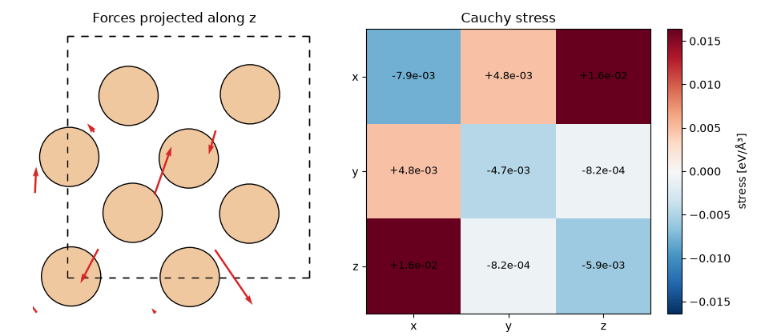

Note
Go to the end to download the full example code.
Basics: single-structure evaluation¶
UPETWrapper wraps a UPET / PET-MAD checkpoint as
an nvalchemi-toolkit
BaseModelMixin model, so it can be driven through nvalchemi’s batched
Batch data pipeline instead of ASE Atoms.
This is the entry point for large-scale batched inference (see
Batched evaluation) and for nvalchemi’s GPU-accelerated MD
integrators (see NVT molecular dynamics).
This example builds a bulk silicon cell as an ASE Atoms object,
converts it to a single-graph Batch with
from_atoms(), and evaluates energy,
forces, and stress with UPETWrapper. Both
tensorial outputs are then visualized: the forces as arrows on the
projected cell, and the Cauchy stress as an annotated 3x3 map.
Note
This example requires the optional nvalchemi extra:
pip install "upet[nvalchemi]".
import matplotlib.pyplot as plt
import numpy as np
import torch
from ase.build import bulk
from ase.visualize.plot import plot_atoms
from nvalchemi.data import AtomicData, Batch
from nvalchemi.neighbors import compute_neighbors
from upet.nvalchemi import UPETWrapper
Loading a checkpoint¶
from_checkpoint() fetches a named
UPET model from HuggingFace (here the small pet-mad-xs model), or
loads a local checkpoint file when checkpoint_path is given instead.
device = torch.device("cuda" if torch.cuda.is_available() else "cpu")
model = UPETWrapper.from_checkpoint(model="pet-mad-xs", version="1.6.0", device=device)
From ASE Atoms to a single-graph Batch¶
from_atoms() builds an
AtomicData instance directly from an ASE
Atoms object, carrying over positions, atomic numbers, cell and
PBC. from_data_list() then promotes it
to a single-graph batch.
atoms = bulk("Si", cubic=True, a=5.43, crystalstructure="diamond")
# Displace every atom slightly off its equilibrium site, so the predicted
# forces are non-zero and of comparable magnitude across the cell.
atoms.rattle(0.05, seed=0)
data = AtomicData.from_atoms(atoms, device=device)
batch = Batch.from_data_list([data], device=device)
Neighbor list and evaluation¶
compute_neighbors() is the one-shot
convenience function for populating a batch’s neighbor list outside
a dynamics loop; model.model_config.neighbor_config already
encodes the cutoff and list format the model expects.
Energy : -46.8500 eV
Forces :
[[-0.6098818 0.79013574 -0.30601698]
[-0.55659235 -1.0620064 0.96056247]
[ 0.03621662 0.81610477 -0.3269433 ]
[-0.22019836 0.2661117 -1.3370566 ]
[-0.12413108 0.15760766 -0.23730144]
[ 1.1662254 -1.7095635 -0.4695834 ]
[ 0.5255206 1.4886923 1.489167 ]
[-0.2171591 -0.74708265 0.22717234]]
Stress :
[[-0.00786457 0.00477575 0.0163688 ]
[ 0.00477575 -0.00465882 -0.0008237 ]
[ 0.0163688 -0.0008237 -0.00593601]]
Visualizing the forces and the stress tensor¶
AtomicData.from_atoms keeps the atom ordering of the Atoms
object, so the force rows line up with atoms and can be drawn
straight onto a projection of the cell. The left panel looks down the
z axis and overlays the in-plane force components as arrows; the
right panel shows the full Cauchy stress tensor, whose off-diagonal
(shear) components are non-zero because the rattle breaks the cubic
symmetry of the ideal diamond cell.
positions = atoms.get_positions()
forces = outputs["forces"].detach().cpu().numpy()
stress = outputs["stress"].squeeze(0).detach().cpu().numpy()
# Scale the arrows so the largest one spans ~1.5 Å on the plot, whatever
# the force magnitudes happen to be.
arrow_scale = np.linalg.norm(forces[:, :2], axis=1).max() / 1.5
fig, (ax_forces, ax_stress) = plt.subplots(1, 2, figsize=(9.5, 4.2))
plot_atoms(atoms, ax_forces, radii=0.6, show_unit_cell=2)
ax_forces.quiver(
positions[:, 0],
positions[:, 1],
forces[:, 0],
forces[:, 1],
color="tab:red",
angles="xy",
scale_units="xy",
scale=arrow_scale,
width=0.007,
)
ax_forces.set_title("Forces projected along z")
ax_forces.set_xlabel("x [Å]")
ax_forces.set_ylabel("y [Å]")
limit = np.abs(stress).max()
image = ax_stress.imshow(stress, cmap="RdBu_r", vmin=-limit, vmax=limit)
for i in range(3):
for j in range(3):
ax_stress.text(
j, i, f"{stress[i, j]:+.1e}", ha="center", va="center", fontsize=9
)
labels = ["x", "y", "z"]
ax_stress.set_xticks(range(3), labels)
ax_stress.set_yticks(range(3), labels)
ax_stress.set_title("Cauchy stress")
fig.colorbar(image, ax=ax_stress, label="stress [eV/ų]", fraction=0.046)
fig.tight_layout()
plt.show()
